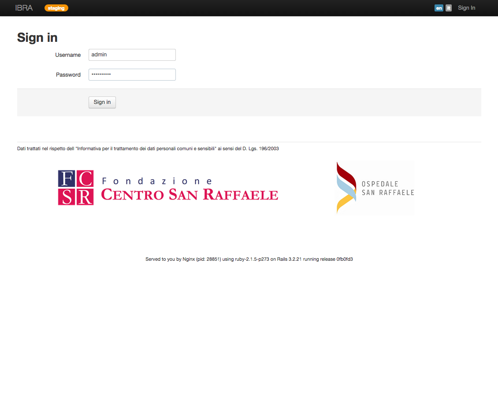
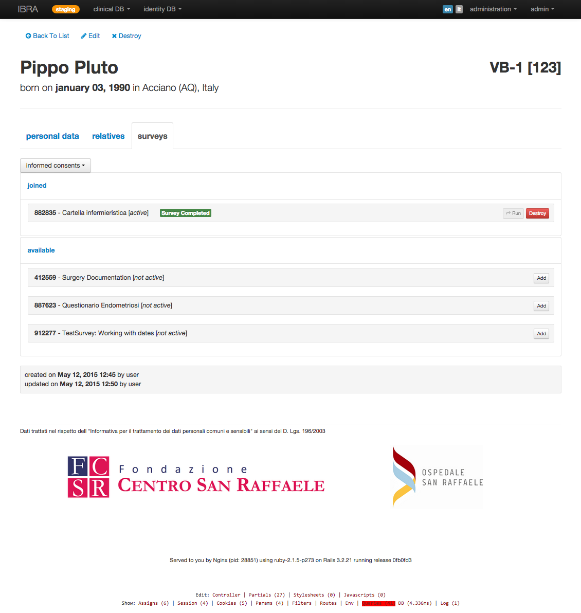
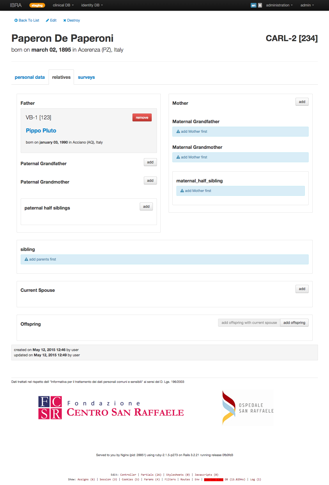
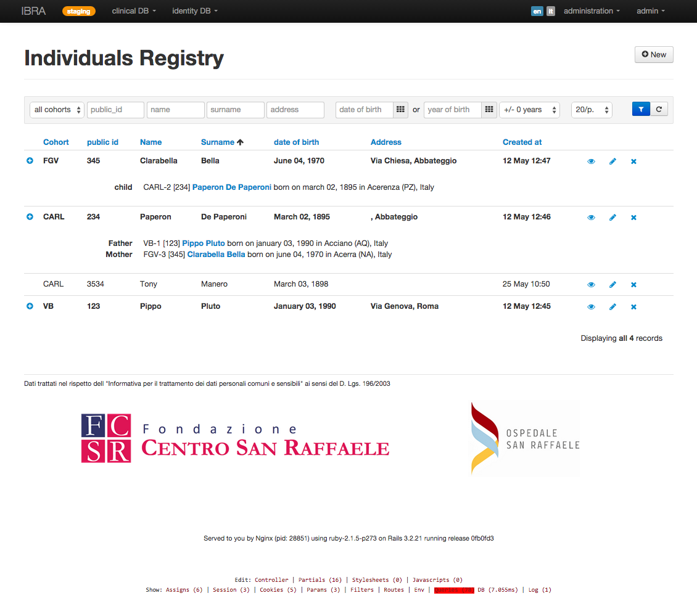

The following are some of the biggest projects I was involved in as main developer. As I am not a web designer, most of my works lack in WOW factors and my best happens behind the scenes.. except for this site ;)
I am a passionate freelance Ruby full-stack web developer with 8 years of experience in structuring, developing and implementing web applications with the popular framework RubyOnRails. I gained experience in all major aspects of software development life cycle, from testing to deployment, in which I feel now very skilled and confident.
Although I am mostly a back-end developer, I am really interested in UX Design and I like to face directly graphic design and usability aspects. I also follow-up on the most recent changes in web development and I am active in the open source environment. I am now oriented towards client-side development which I look forward to put in practice at professional level.
Genealogy is a ruby gem library which extends ActiveRecord models in order to make its instances act as relatives so that you can build and query genealogies. It was extracted as a gem from the IBRA project and later publicised on Github.
IBRA was developed to manage clinical data collection for the endometriosis project of San Raffaele Hospital which remotely involved many other teams from hospitals and clinical centers in Italy. Because of the moltitude of users and the kind of data (sensitive) particular attention to security was adopted implementing not only the authentication layer but also authorization strategies were necessary to protect each team's data from each other.
Its role was to act as a portal for all doctors tasked to insert, at first, patients' identity records and then anonymous clinical data through some Limesurvey questionnaires. IBRA controls the access to the surveys for each patients keeping track of their state of progress. The usage of an external tool like Limesurvey lets us to take advantage of its specialization in survey forms building and management and to keep separate public data from clinical data. To do that better (i.e. modularizing in an external gem) I had to develop a library to make Rails talk to the Limesurvey API called limesurvey_rails.
Another interesting aspect of IBRA is its ability to insert patients' familiars letting them become participants at a later stage. This way is possible to build genealogy while populating the database allowing genetical observations to take place. As for Limesurvey, the genealogy business logic was extracted in an external gem called genealogy.
A second phase of development would deal with the download of the Limesurvey collected responses data back to IBRA.
Client:
Ospedale San Raffaele
From:
june 2012
To:
today




Biobank Manager
A platform to safely manage any kind of biological samples, organized in tubes or multiwell plates and identified by a barcode. It keeps track of position, type and amount of the biological materials stored and of the history of the manipulations performed on each tube.
It was also designed to organize “operations” that can be performed on each sample and on large groups of samples like aliquoting splitting, dilution, concentration measurements.
It was previously part of the larger project VIPP and then extracted for Biomeris in order to make a commercial product
Modern biology deals with management of large amount of data, with use of different analysis tools that have to be used by different team members with various roles and expertise. Moreover, sensible data issues have to be considered, as well as the access to powerful centralized computational units.
VIPP (ValBorbera Isolate Project Platform) is a multiuser database centered web application made with Ruby On Rails and MySql.
The platform can manage and connect different kind of data:
Biological data. It is able to safely manage any kind of biological samples, organized in tubes or multiwell plates and identified by a barcode. The Biobank module keeps track of position, type and amount of the biological materials stored and of the history of the manipulations performed on each tube. It was also designed to organize “operations” that can be performed on each sample and on large groups of samples like aliquoting splitting, dilution, concentration measurements.
Clinical data, collected from medical anamnesis. Information on donors is stored on a separate part of the DB and is encrypted for privacy reasons, as indicated by the privacy law. Access to the sensible data is limited. Clinical and laboratory tests results can be organized formally in collections of qualitative and quantitative phenotypes for analysis.
Genotypical data. A database of DNA variation was developed to store and easily retrieve data form Whole Genome (WG) SNP genotyping. Storage of DNA variation derived from deep sequencing is under development as well as information on RNA Seq, Chip seq and other deep sequencing data. Data can be automatically extracted and formatted for analysis.
Tools for genetic association analysis have been integrated in the platform and pipelines were developed to link different analysis softwares and the different data that can be retrieved from the other DBs. Results from analyses done on the same trait can be plotted and compared: zooming in regions and extraction of results in table format is also available. The platform is integrated with public databases and resources like Ensembl and NCBI. Post-analysis tools and visualization utilities like Haploview and SNAP simplify and expedite the process of analyses.